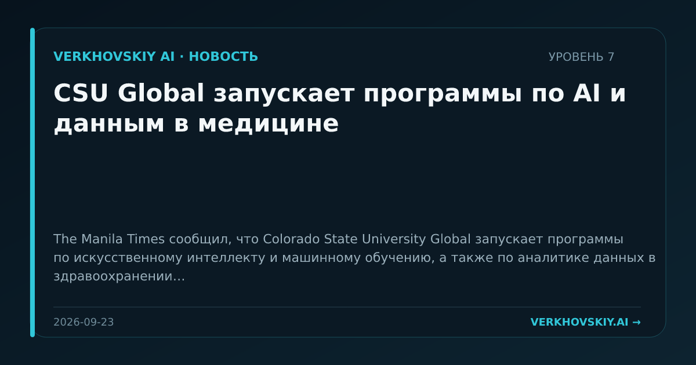

CSU Global запускает программы по AI и данным в медицине
The Manila Times сообщил, что Colorado State University Global запускает программы по искусственному интеллекту и машинному обучению, а также по аналитике данных в здравоохранении. Почему это важно: AI-образование связывается с отраслевыми данными, прежде всего в здравоохранении. Это укрепляет подготовку специалистов на пересечении моделей, данных и профессиональных практик.